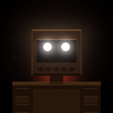
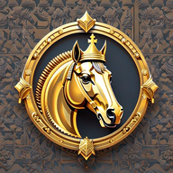

Games made without a programmer
Игры, сделанные без программиста
I am Kanan Rahimov, a psychiatrist. I cannot write code. These games were built with an AI coding agent, Claude Code: I design, test and write the bug reports, and the agent writes the code.
Меня зовут Кенан Рагимов, я психиатр и не умею программировать. Эти игры сделаны с ИИ-агентом Claude Code: я придумываю, проверяю и пишу отчёты об ошибках, а код пишет агент.


Abandoned Store
Заброшенный магазин
A night shift in a closed shop that is not as empty as it looks. A first-person quest made in Godot 4; the first level, "Night Shift", is finished.
Ночная смена в закрытом магазине, где не так пусто, как кажется. Квест от первого лица на Godot 4; первый уровень, «Ночная смена», готов.
Version 1.0.2. The in-game text is in Russian for now; an English version is planned.
Версия 1.0.2.

ChessCoin
Chess inside Telegram, with nothing to install: real-time games between players, play against Stockfish, tournaments, team "country wars", puzzles and lessons. About 53,000 lines of code.
Шахматы внутри Telegram, ничего не нужно устанавливать: партии между игроками в реальном времени, игра против Stockfish, турниры, командные «войны стран», задачи и уроки. Около 53 тысяч строк кода.
Abandoned Waterpark
Заброшенный аквапарк
A co-op quest for up to four players in a spiral waterpark with an underwater world. Not released yet.
Командный квест до четырёх игроков в винтовом аквапарке с подводным миром. Ещё не выпущен.